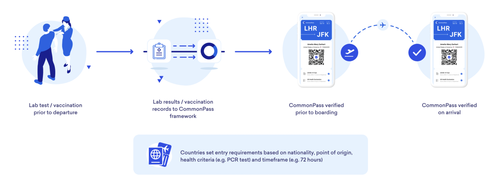
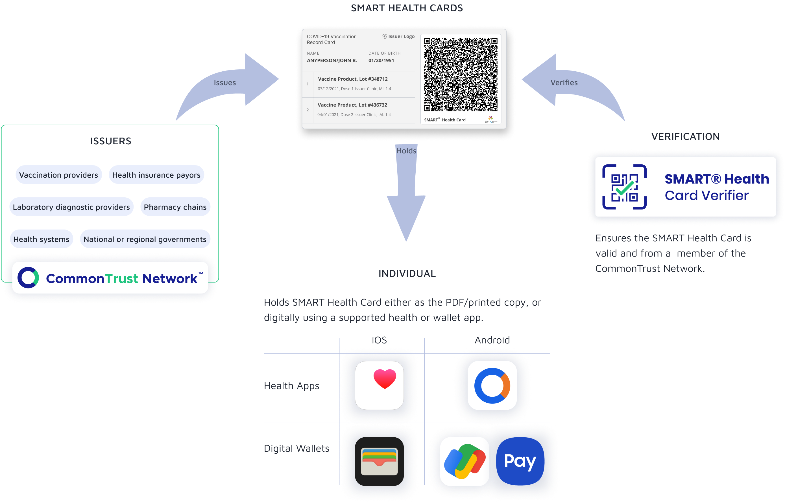
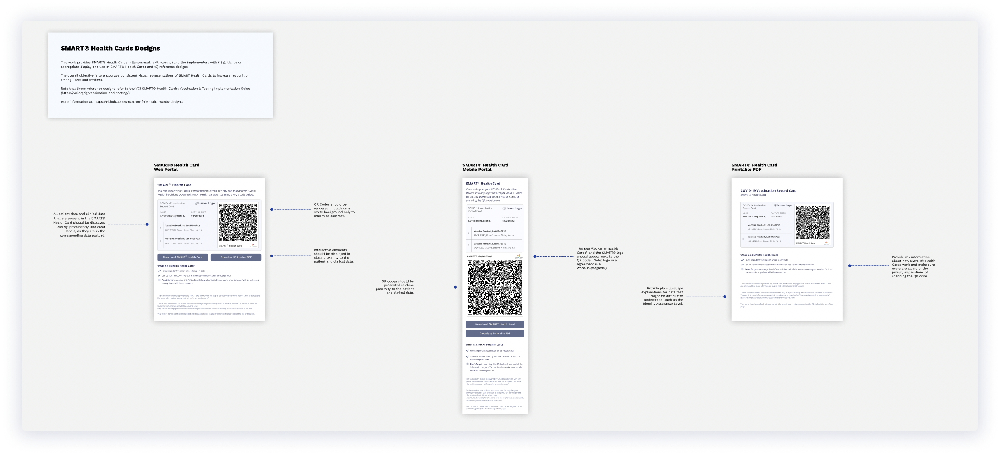
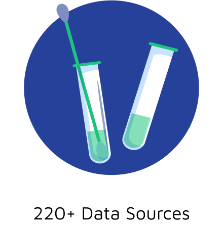
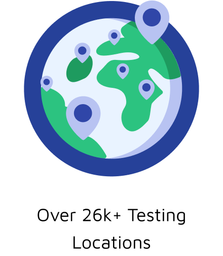

Designing solutions across an evolving problem space.
December 2020 - Current
The Commons Project is a non-profit public trust, established with support from the World Economic Forum and the Rockefeller Foundation, building solutions that empower people to access, manage, and share their data.
In less than three years, The Commons Project has built and launched a remarkable suite of digital products and services, many to address the collective need for the safe sharing of health records, verification of vaccination information and test results in the wake of the COVID-19 global pandemic.
These include:
In less than three years, The Commons Project has built and launched a remarkable suite of digital products and services, many to address the collective need for the safe sharing of health records, verification of vaccination information and test results in the wake of the COVID-19 global pandemic.
These include:
- CommonHealth™, a service empowering Android users to collect, manage and share their health data
- CommonPass™, a mobile app designed to provide global travelers with a secure and verifiable way to document their health status as they cross borders
- SMART Health Card Verifier App, a verification tool that scans SMART Health Card QR codes to check the validity of an individual’s vaccination record
- CommonTrust Network™, a global registry of trusted SMART Health Cards issuers, including governments, health systems, testing providers, vaccination providers, and public health registries.
The Commons Project also co-leads VCI, a voluntary coalition of more than 900 public and private stakeholders, including Apple, Microsoft and MITRE, committed to empowering individuals with access to a trustworthy and verifiable copy of their vaccination records in digital or paper form using open, interoperable standards. The group led the development of the SMART Health Card Framework, which is currently being rolled out nationwide by national pharmacies, leading health systems, state governments and more.
I joined in December 2020 eager to be part of a team working with a tangible impact in the space of COVID-19 safety. My role, the projects, and the problem space of COVID were pieces of a dynamic landscape, here is how I helped define and evolve products and solutions.
I joined in December 2020 eager to be part of a team working with a tangible impact in the space of COVID-19 safety. My role, the projects, and the problem space of COVID were pieces of a dynamic landscape, here is how I helped define and evolve products and solutions.
Phase 1 | CommonPass | Winter 2020 - Spring 2022
How might we provide verifiable and untampered proof of COVID test status for travel?
CommonPass was born with the vision of people importing their test results and (later) vaccine records and keeping them securely on their phones. Ultimately, the platform assesses whether the individual’s lab test results or vaccination records come from a trusted source and if they satisfy the health screening requirements of the destination they want to travel to. If the passenger satisfies the requirements, the platform creates a “yes” or “no” certificate that they can share without sharing any personal health data.

Personal role
While the core of the UX had already been designed before I joined The Commons Project, my role(s) within the CommonPass team expanded beyond the product design.
- I met with many external stakeholders to understand needs from all perspectives
- Health officials from islands such as Aruba and Hawaii - to determine their needs and the needs of those traveling to these islands.
- Airline digital and marketing teams, and on the ground airline agents - to understand how to best help the airline and airport experience.
- Labs - to help best integrate with CommonPass for their success and consumers
- And, of course, travelers - to understand current pain points of travel during the COVID-19 pandemic.
- In order to make the customer experience as seamless as possible, I designed communications and user journey documentation (via websites, airline email, and more) targeted at the users as well as the airline screeners and other stakeholders.
- As we expanded routes and service offerings, like adding vaccination records to the CommonPass experience for governments that have vaccination as an entry requirement, I designed new and updated existing user flows - communicating design concept for digital products through various artefacts such sketches, wireframes, user flows, screen designs and interactive prototypes.
Samples of user journeys and other materials avaliable upon request.
4 things to know about the CommonPass digital health app
State of Hawaii Adopts CommonPass Digital Health App, Enabling All Domestic Travelers with SMART Health Cards to Streamline
Lufthansa Becomes Latest Airline to Integrate CommonPass
Aruba, JetBlue Begin Using CommonPass Digital Health Platform
Phase 2 | SMART Health Card Ecosystem | Spring 2021 - Ongoing
How might we create an interoperable standard for health records?
With the upcoming vaccination schedules for most Americans, there was a need to unify a standard for vaccination credentials. The SMART Health Card Framework was created to empower individuals to access a trustworthy and verifiable copy of their vaccination records in digital or paper form using open, interoperable standards. Individuals can then use those verifiable credentials for medical purposes and to demonstrate their health status to safely return to work, school, travel, and life.

Defining SMART Health Cards
Creating something as noble as an open-source standard in an active pandemic could not be achieved alone. The Commons Project was among the Steering Group, composed of the founding members of the coalition that are actively supporting and overseeing the implementation guide development process and ensuring that members of VCI faithfully implement the standard and adhere to the guiding principles of VCI. Other members of the Steering Group currently include representatives from Mayo Clinic, MITRE Corporation, Microsoft, The Commons Project Foundation, Evernorth, CARIN Alliance, UC San Diego Health, and Apple.

Personal role
My role in the creation of SMART Health Cards was designing the reference visual design files (above), and creating guidance on appropriate display, use of, and Customer Experience to access SMART® Health Cards for issuers of the cards.
Early in the creation of SMART Health Cards, I also worked directly with the digital teams of the initial issuers, states like California and Louisiana, and pharmacies such as Walmart. We collaborated to ensure that the journey for individuals to access their records was easy, and that there was enough information for individuals to understand the privacy persevering technology behind it.
Early in the creation of SMART Health Cards, I also worked directly with the digital teams of the initial issuers, states like California and Louisiana, and pharmacies such as Walmart. We collaborated to ensure that the journey for individuals to access their records was easy, and that there was enough information for individuals to understand the privacy persevering technology behind it.
Creating a Trust Network
Because the technology behind SMART Health Cards was open source, there was a need for a registry of trusted Health Data Sources and Issuers of standards-based and government-backed health certificates from around the world. The CommonTrust Network™ inclusion criteria are defined in coordination with the VCI™ Steering Committee with broad community input. The Commons Project Foundation (TCP) manages the CommonTrust Network™ and is responsible for reviewing and evaluating new participants. Network members include:
- Clinical health systems or hospitals providing patient care
- National or regional pharmacy chains
- National or regional laboratory diagnostic providers
- National or regional health insurance payors
- Government or governmental agencies

Personal role
The two main roles I played in the creation and maintenance of the CommonTrust Network were both regarding adoption -
- Making the sign-up process for the Network simple and efficient while still providing all relevant information. This was a project of creating the right digital funnels for each of the different member types and ensuring that individuals who were trying to access their SMART Health Card did not come through the funnel.
- Helping new network members increase adoption from their end-users by advising pharmacy, state, and health network digital teams on how to best lead a user to a SMART Health Card and help the user understand its value. While the intial issuer launches were designed in collaboration, we learned what went well and what did not and I built out playbooks on how to launch with SMART Health Cards. (Available on request)
Verification
Just as there is a need to provide individuals with the Cards, there is a need from business owners, bar bouncers, anyone who chooses to verify a SMART Health Card the ability to do so. The SMART® Health Card Verifier app allows you to scan a SMART Health Card QR code to quickly verify an individual’s COVID-19 vaccination credential.
California COVID vaccine code not scanning? Here's why
Does your job description now include vaccine bouncer? This is what you need to know
Personal role
I designed both the experience and interface of the verifier app, and was accountable for the product marketing aspects of the App Store/Google Play Store contents. As more SMART Health Cards were issued and app downloads began to rise, I also took the feedback from reviews and used them to improve the app. As SMART Health Cards began to be issued for COVID-19 tests, I redesigned the UX to support both types of health records.
Milestones and Ecosystem Reach
In the pursuit of allowing individuals to hold their SMART Health Cards in the way they found most valuable, it was an incredible effort to have both major operating systems develop solutions to ingest the cards in their respective digital wallets.
- Apple natively being able to read SMART Health Cards and gives the users options to save to their Apple Wallet and/or Apple Health app.
- Android users can add their SMART Health Cards to Samsung Pay and Google Pay via CommonHealth, a service from The Commons Project.
Reach
The vast majority of the vaccinated individuals in the US – over 200 million of them through their state, pharmacy, or health provider – already have the ability right now to access their SMART Health Card. The standard has expanded globally - Japan, Aruba, and Rwanda to name a few countries.
Phase 3 | CommonCheck | Fall 2021 - Ongoing
How might we share interoperable health records for entry based on health requirements?
CommonCheck enables governments, airlines, enterprises, and other organizations to reopen in a more secure and scalable way by offering the ability to quickly verify a wide range of digital COVID-19 health credentials.
CommonCheck reads and verifies the validity of passenger-uploaded health credentials, and matches them against the destination’s entry rules. The traveler is notified of the vaccination certificate verification results within seconds. Verification happens digitally pre-departure, offering travelers peace of mind and enabling a return to automated passenger processing.
CommonCheck reads and verifies the validity of passenger-uploaded health credentials, and matches them against the destination’s entry rules. The traveler is notified of the vaccination certificate verification results within seconds. Verification happens digitally pre-departure, offering travelers peace of mind and enabling a return to automated passenger processing.
Personal role
- Drove solving design problems end-to-end, from identifying user needs, generating concepts to defining and creating a product and crafting how travelers will interact with the portal.
- Designed and executed a customer research stint involving interviews, demos and secondary research. The result of which was presented to our executive team and used to drive product roadmap decisions.
- Contributes to new business development efforts by providing expert information in pitch efforts and client meetings.
- Communicates design concept for digital products through various artefacts such sketches, wireframes, user flows, screen designs and interactive prototypes.
What is the future potential of SMART Health Cards and health data?
Though I finish out my time at The Commons Project, I only hope to see the SMART Health ecosystem and health grow with a focus on empowering individuals to use and share their data in more powerful ways, but only as they fit.
Exploring the Past, Future of SMART Health Cards, Patient Data Access